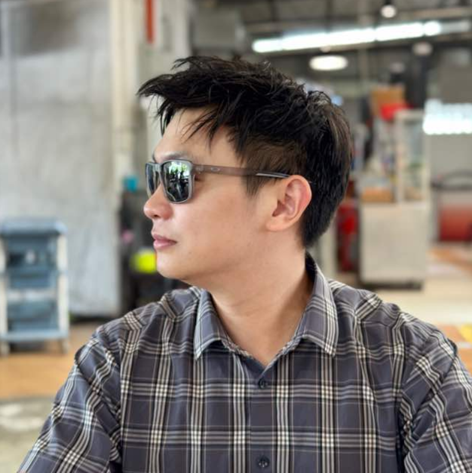

JEREMY LIM JIAN YUN
HP: 0168872998 | keremylim123@gmail.com | Kuching, Sarawak
OBJECTIVE
Vision Engineer with 5+ years of experience in machine vision, image processing, and automation systems,
currently expanding skillset in Full Stack Web Development. Strong background in software engineering,
system integration, and customer support, with a passion for bridging industrial automation and modern web applications.
Seeking opportunities to contribute both vision engineering expertise and growing full stack development skills to innovative projects
EDUCATION
Bachelor of Engineering (Robotics and Mechatronics)
Swinburne University of Technology – 2018
WORK EXPERIENCE
Senior Vision Engineer (R&D)
Vitrox Technologies Sdn Bhd – Penang (Jan 2019 – May 2025)
- Designed and optimized machine vision algorithms for high-speed Automated Optical Inspection (AOI) systems.
- Developed custom software tools and GUIs (Qt, C#, Python) to support calibration, diagnostics, and system testing.
- Integrated vision hardware (cameras, lenses, lighting) into production systems to ensure accuracy and throughput.
- Collaborated with sales and application teams to conduct feasibility studies, demos, and technical presentations for customers.
- Provided on-site customer support and training, ensuring smooth adoption of inspection solutions.
Independent Business Partner
Health & Wellness Network Marketing (2024 - Present)
- Promoted and sold health products via digital marketing and direct sales.
- Conducted personalized consultations, closing deals and building repeat customers.
- Mentored new team members in product knowledge and sales communication.
TECHNICAL SKILLS
Vision& Automation
- Machine Vision: HALCON, OpenCV, VisionPro
- Programming: C++, Python, C#, Qt
- Vision Hardware: Optics, Cameras, Lighting, Controllers
- CAD: SolidWorks, AutoCAD
Full Stack Development (In Progress)
- Frontend: HTML, CSS, JavaScript, React (learning)
- Backend: Node.js, Express.js (learning)
- Database: MySQL, MongoDB (learning)
- Tools: Git/GitHub, REST APIs
LANGUAGES
- English – Fluent
- Chinese – Conversational
- Malay – Conversational